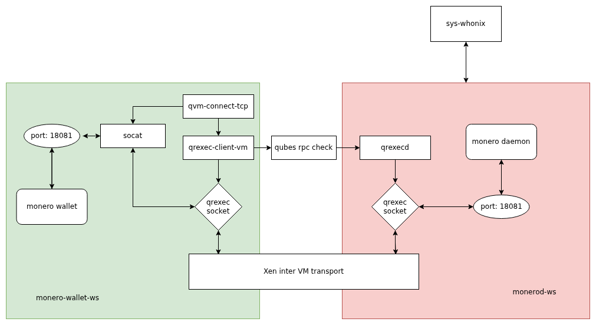

We believe security software like Whonix needs to remain Open Source and independent. Would you help sustain and grow the project? Learn more about our 14 year success story and maybe DONATE!
MoneroDocumentationUnstoppableSwapPrevious page: MoneroIndex page: DocumentationNext page: UnstoppableSwapHow-to: Use Monero with Wallet Isolation in Qubes-Whonix™

Isolate the network part (monerod) from the wallet part
(Monero Wallet) for better security.
Introduction
These instructions explain how to isolate the network part
(monerod) from the wallet part (Monero
Wallet) for better security. monerod is
the Monero daemon, a full blockchain-verifying background process that
downloads and verifies the entire blockchain.
The advantage of this setup is that, should there ever be a
vulnerability that allows malware to exploit
monerod, all user funds would remain
safe, since these would remain isolated in Monero Wallet in a different
VM.
If monerod was ever compromised,
then this setup would have the same issues as described on the Monero wiki page in chapter Remote Node Security and Privacy Considerations.
This issue is unspecific to these instructions.
The connection scheme is Monero Wallet →
Qubes RPC → monerod →
Tor → Monero network.
Figure: Monerod isolation setup (Contributed by MarkTheCoder.)''

Inappropriate Use of Root Rights should be avoided.
Instructions on this wiki page have been carefully crafted with when to
use sudo and when not to use it in mind. The user should
not use sudo unless instructed to do so in the
documentation. [1]
 Warning: This is for testers-only!
Warning: This is for testers-only!
Credits: These instructions are based on How to use Monero CLI/daemon with Qubes + Whonix by getmonero.org.
Prerequisite Knowledge
Since this setup is more complex and intended for advanced users only, it is highly recommended to first acquire essential knowledge about using Monero by following the "normal", simpler instructions on the Monero wiki page, without reference to the instructions on this wiki page. Only after the essential knowledge has been acquired should the more complex setup documented on this wiki page be layered on top.
Practicing with a small amount of value is recommended, but not too small (below the dust level, making it impossible to move funds because they are worth less than the required transaction fees). Practicing on Monero testnet first should also be considered. This is unspecific to Whonix.
1 Optional. How to use Monero Wallet GUI.
If the end goal is to use an offline (airgap) Monero Wallet, learning how to use Monero Wallet GUI would be expendable.
2 How to use Monero Wallet CLI.
Wallet creation, receiving funds, spending funds.
3
How to use monerod.
Make sure you understand how monerod
works and can interpret its log.
4
How to use systemd.
You should have a basic understanding of systemd for
debugging.
Setup
Qubes dom0
Configuration
Create App Qubes
In dom0.
It is easier to use the exact same names as in the example below in this chapter. Otherwise, adjustments in the next chapter, "Qubes qrexec Policy Configuration", would be required.
1
Create monero-wallet-ws qube.
Qubes App Launcher (blue/grey "Q") →
Settings Button → Qubes Tools →
Create New Qube → Select type: Application
- Create Qubes-Whonix-Workstation™ App Qube
- Name:
monero-wallet-ws. - Color: Choose a color label for the Whonix-Workstation App Qube.
Optional suggestion:
green - Template: Choose the Whonix-Workstation Template. For example:
whonix-workstation-18. - Network connection: Choose
none. - Press:
Create new qube.
- Name:
2
Create monerod-ws qube.
Qubes App Launcher (blue/grey "Q") →
Settings Button → Qubes Tools →
Create New Qube → Select Type: Application
- Create
monerod-wsApp Qube- Name:
monerod-ws. - Color: Choose a color label for the Whonix-Workstation App Qube.
Optional suggestion:
red - Template: Choose the Whonix-Workstation Template. For example:
whonix-workstation-18. - Network connection: Choose the desired Whonix-Gateway™
ProxyVM from the list. For example:
sys-whonix. - Press:
OK.
- Name:
3
Adjust monerod-ws storage size.
Qubes App Launcher (blue/grey "Q") →
monerod-ws → Settings → Basic →
Private storage max size: 200GiB
Qubes qrexec Policy Configuration
1 Open Qubes Policy Editor.
Qubes App Launcher (blue/grey "Q") →
Settings Button → Qubes Tools →
Qubes Policy Editor
2 Create new policy file.
File → New, for example
20-user
3
Allow network connection from wallet to monerod VM.
Write
qubes.ConnectTCP +18081 monero-wallet-ws monerod-ws allow
in the newly created config file.
4
Click Save and Exit.
monerod-ws
VM Configuration
1
Install Monero using Flatpak in monerod-ws.
Install Monero in monerod-ws by following this document:
Install
Monero
2
Create data folder for monerod.
mkdir -p ~/.bitmonero
3
Create folder for systemd --user.
mkdir -p ~/.config/systemd/user
4
Create file
~/.config/systemd/user/monerod.service.
Open file ~/.config/systemd/user/monerod.service in a text editor of your
choice as a regular, non-root user.
If you are using a graphical environment, run. featherpad ~/.config/systemd/user/monerod.service
If you are using a terminal, run. nano ~/.config/systemd/user/monerod.service
5
Paste the following contents into
~/.config/systemd/user/monerod.service.
[2]
Notes:
--prune-blockchainis optional. It can significantly lower disk usage without any negative impact on privacy.--db-sync-mode=safeis optional. It will slow down the sync process, but it prevents themoneroddatabase from being corrupted if you accidentally kill themonerodVM.
[Unit] Description=Monero daemon (Flatpak, user service) After=network.target Wants=network.target
[Service] Type=simple
ExecStart=/usr/bin/flatpak run \ --command=monerod \ --share=network \ --filesystem=%h/.bitmonero:rw \ org.getmonero.Monero \ --prune-blockchain \ --db-sync-mode=safe \ --data-dir=%h/.bitmonero \ --non-interactive
ExecStop=/usr/bin/flatpak kill org.getmonero.Monero
Restart=on-failure RestartSec=30 StandardOutput=journal StandardError=journal
[Install] WantedBy=default.target
6 Save and close file.
7
Reload the systemd user instance.
systemctl --user daemon-reload
8
Optional: Enable autostart for the
monerod systemd user
service.
systemctl --user enable monerod
9
Start the monerod systemd
user service.
systemctl --user restart monerod
10
Check monerod status.
curl -s http://127.0.0.1:18081/get_info
You should see detailed dictionary output from
monerod reporting its status; if
nothing appears, the monerod service is
not functioning properly.
monero-wallet-ws VM
Setup
1
Install Monero using Flatpak in monero-wallet-ws.
Install Monero in monero-wallet-ws by following this
document: Install
Monero
2
Open file /rw/config/rc.local in an editor with
administrative ("root")
rights.
1 Select your platform.
2 Notes.
- Sudoedit guidance: See
 Open File with Root Rights for details on why using
Open File with Root Rights for details on why using
sudoeditimproves security and how to use it. - Editor requirement: Close Featherpad (or the chosen text
editor) before running the
sudoeditcommand.
3 Open the file with root rights.
sudoedit /rw/config/rc.local
2 Notes.
- Sudoedit guidance: See
Open File with Root Rights for details on why using
sudoeditimproves security and how to use it. - Editor requirement: Close Featherpad (or the chosen text
editor) before running the
sudoeditcommand. - Template requirement: When using Qubes-Whonix, this must be done inside the Template.
3 Open the file with root rights.
sudoedit /rw/config/rc.local
4 Notes.
- Shut down Template: After applying this change, shut down the Template.
- Restart App Qubes: All App Qubes based on the Template need to be restarted if they were already running.
- Qubes persistence: See also
Qubes Persistence
- General procedure: This is a general procedure required for Qubes and is unspecific to Qubes-Whonix.
2 Notes.
- Example only: This is just an example. Other tools could achieve the same goal.
- Troubleshooting and alternatives: If this example does not work for you, or if you are not using Whonix, please refer to Open File with Root Rights.
3 Open the file with root rights.
sudoedit /rw/config/rc.local
3 Append the following line at the bottom.
qvm-connect-tcp 18081:monerod-ws:18081
4 Save and close file.
5
Make the /rw/config/rc.local script executable.
sudo chmod +x /rw/config/rc.local
6
Restart the monero-wallet-ws VM.
7
Check monerod access in monero-wallet-ws.
curl -s http://127.0.0.1:18081/get_info
You should see detailed dictionary output from monerod;
if you do not, it indicates that monero-wallet-ws was
unable to connect to the monerod service in
monerod-ws. You should check your Qubes RPC
configuration.
Usage
Introduction
Note: On the host (Qubes users: in
dom0).
The involved VMs need to be started using any usual method (using Qubes VM Manager (QVMM), starting a terminal emulator, or otherwise).
1
Start monerod-ws VM.
2 Check synchronization status.
Run the command in monerod-ws:
curl -s http://127.0.0.1:18081/get_info | grep synchronized
If you see "synchronized": true, your node is ready.
3
Start monero-wallet-ws VM.
Note: The following instructions should be applied
in Whonix-Workstation (Qubes-Whonix: App Qube
monero-wallet-ws).
4 Start Monero Wallet. Either:
- A) Start Monero Wallet GUI using any method (from the start menu, from the command line, or through autostart), or
- B) Start Monero Wallet CLI using any method.
5 Done.
The required VMs and Monero Wallet have been started.
Monero Wallet GUI First Time Setup
This first time setup only needs to be performed once.
Optional. The user could also avoid using Monero Wallet GUI and use Monero Wallet CLI instead.
Monero Wallet GUI lacks support for multisig and offline signing.
Note: The following instructions should be applied
in Whonix-Workstation (Qubes-Whonix: App Qube
monero-wallet-ws).
1
Monero Wallet GUI → Choose Advanced Mode.
2 After Monero Wallet GUI has started, it will ask you to create or restore a wallet as usual. This is unspecific to these instructions.
3
Configure Monero Wallet GUI to use local
monerod (which is running in the
monerod-ws VM).
The following setting is called remote node. There is no
need for concern. See footnote. [3]
Monero Wallet GUI should now be running. Go to: [4]
Connect to a remote node → Add Remote Node
→ Address: 127.0.0.1 → Port:
18081
Daemon username: No modifications required. Leave empty.Daemon password: No modifications required. Leave empty.
(If Monero Wallet GUI was already started, these settings can be
found under: Settings → Node)
4 Done.
Monero Wallet GUI First Time Setup has been completed.
Monero Wallet CLI First Time Setup
Alternatively, Monero Wallet GUI can be used.
Note: The following instructions should be applied
in Whonix-Workstation (Qubes-Whonix: App Qube
monero-wallet-ws).
Start Monero Wallet CLI.
- Outdated command. Requires
monero-wallet-cliin/usr/bin.- monero-wallet-cli
- Untested command:
- flatpak run --command=monero-wallet-cli org.getmonero.Monero
Monero Wallet CLI is more "clever" and automatically detects the
already available monerod.
[5] Therefore, as opposed to Monero Wallet GUI, no
"remote node" configuration is necessary.
This might not work easily with Flatpak because the host listening port might not be visible from within the Flatpak chroot. This will most likely require additional Flatpak options.
Monitoring
Note: The following instructions should be applied
in Whonix-Workstation (Qubes-Whonix: App Qube
monerod-ws).
Check the status of the monerod
systemd user service.
systemctl --user status monerod
Monitor block height.
curl -s http://127.0.0.1:18081/get_info | grep height
Follow the journal log of the
monerod systemd user
service.
journalctl --boot --user -f -u monerod
Follow the log file of monerod.
tail -f ~/.bitmonero/bitmonero.log
View the log file of monerod.
Open file ~/.bitmonero/bitmonero.log in a text editor of your
choice as a regular, non-root user.
If you are using a graphical environment, run. featherpad ~/.bitmonero/bitmonero.log
If you are using a terminal, run. nano ~/.bitmonero/bitmonero.log
For the initial author of this wiki page, it took approximately 7
minutes from monerod logging
SYNCHRONIZATION started until further synchronization
progress was actually reported.
2021-11-02 10:53:55.204 [P2P4] INFO global src/cryptonote_protocol/cryptonote_protocol_handler.inl:413 SYNCHRONIZATION started
2021-11-02 11:00:20.821 [P2P9] INFO global src/cryptonote_protocol/cryptonote_protocol_handler.inl:1680 Synced 201/2484385 (0%, 2484184 left)See Also
Donations
After setting up Monero with wallet isolation, please consider making a donation to the Monero and Whonix projects (Donate) to help keep them running for many years to come.
 Donate Monero (XMR) to Whonix.
Donate Monero (XMR) to Whonix.
84ZZSsqyh5niztCgxmWAejDLu9eDerWo4Wsx8woEhDGpdKP3BWPtqenNjKuv8vojrB968U3hqYTKgLGt2zEcGopX1qaEPew

Footnotes
- The
systemctl --usercommand must be run as a normal, non-root user withoutsudobecause these aresystemduser units and notsystemdsystem units. - Do not use
--detach. This is an outdated style for daemons. Error handling is better without it. - * This is safe, because the connection will be made from Monero
Wallet in the
monero-wallet-wsVM to a self-hostedmonerodserver running in themonerod-wsVM. * Only in case of using a "real" remote node hosted by a third-party it is discouraged to selectMark as Trusted Daemon. - Monero
Wallet GUI fails to detect already running
monerod monero-wallet-clidetects thatmonerod's default port18081is open on localhost. The detection mechanism is port-based, not process-based.
Categories: Documentation